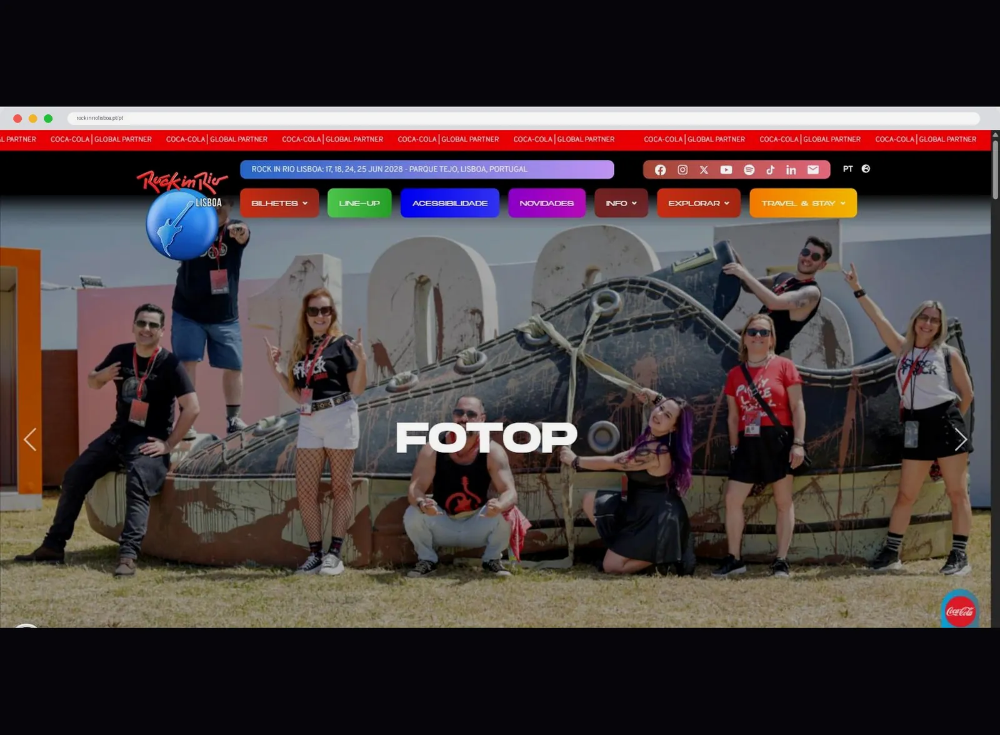
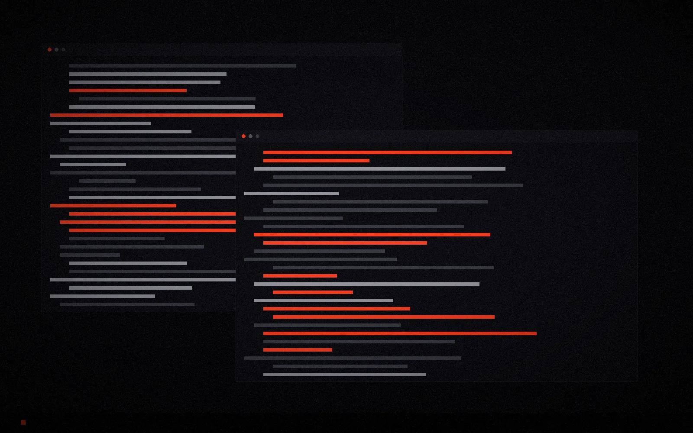
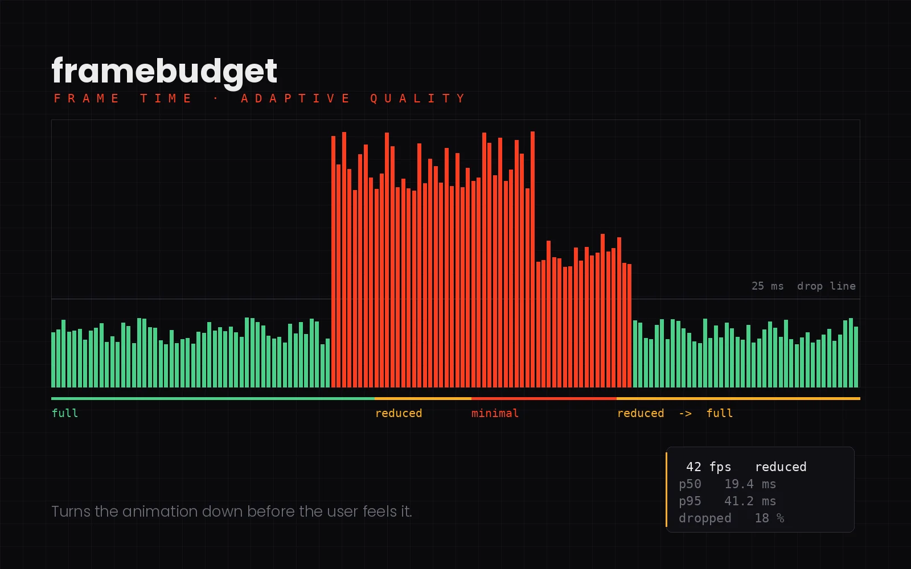
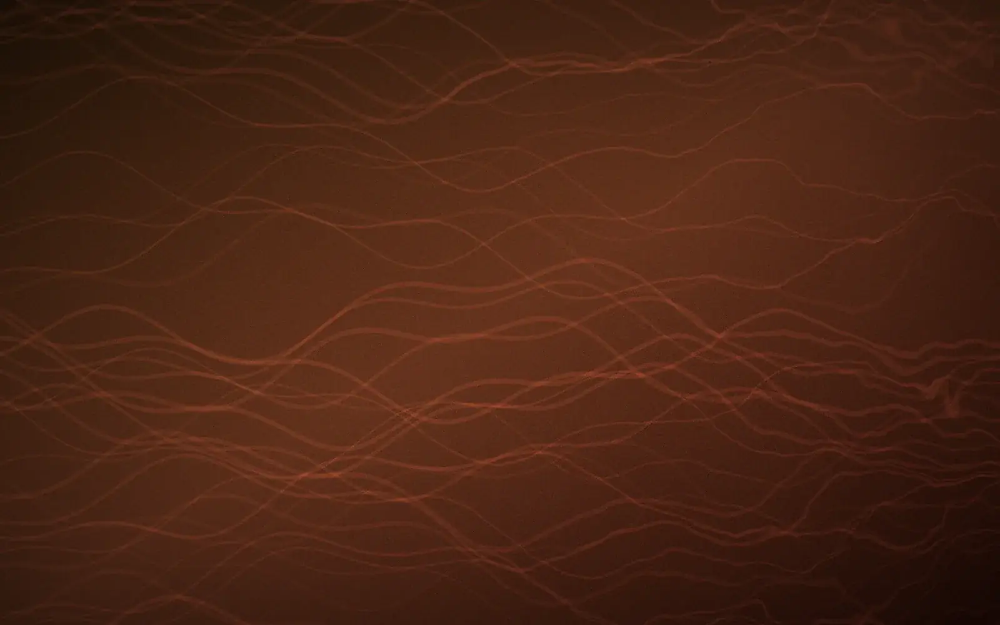
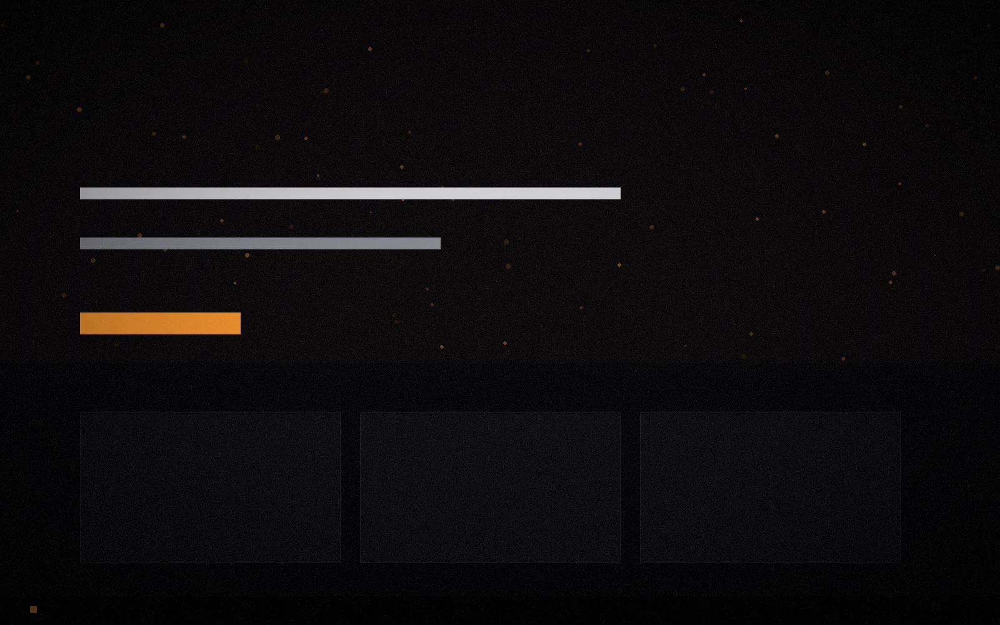
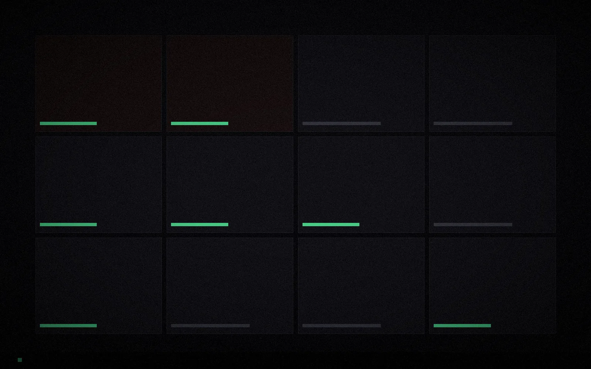
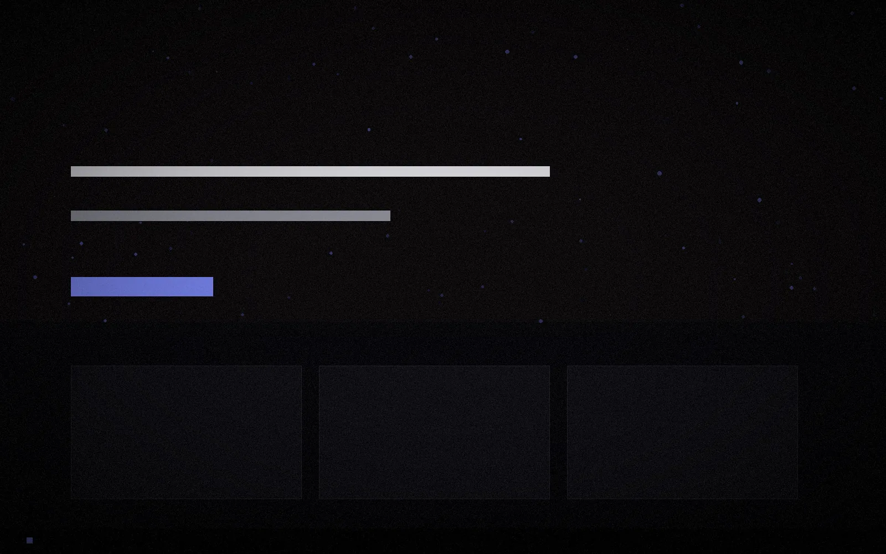

Rodrigo Figueiredo
I build web platforms and help keep them standing.
- Rock in Rio Lisboa 2026
- Platform
- 1.9M
- Users
- 18M
- Events
- Zero
- Downtime
Anyone can launch a website. Keeping one up while 1.9 million people pass through is a different job.
How a platform comes together
Nothing
starts whole
Every platform begins as parts that don't know about each other yet.
Then it
comes together
Front-end, back-end, content, SEO — each piece arriving on its own schedule.
And it
has to hold
1.9 million people came through over the 2026 cycle. It held. That's the part of the job nobody sees.
What I do
Fullstack
Development
Front-end and back-end in JavaScript, PHP and WordPress — the stack I ship in. React, Next.js and Node I know and use, but my production years are in the first three. From a landing page to a platform that has to stay up when tens of thousands arrive at once.
Interface
& Experience
Master's in Web UX/UI. I care how a thing feels to use, not only whether it works. Layout, motion, and the decisions that make a page easy to move through.
SEO &
Performance
1.1M organic sessions on the Rock in Rio platform — its largest channel, ahead of paid. Technical SEO, Core Web Vitals, and pages that load before people leave.
Motion
& 3D
Video, motion graphics and 3D in Blender and Adobe Creative Cloud. Useful more often than it sounds — it means a project doesn't stall waiting on assets.
Selected Work

JavaScript · PHP1.9M users · 18M events 2026

Next.js · GSAPWebGL · Three.js 2026

Open source · JavaScriptZero dependencies 2026

Open source · WebGPUWGSL · Zero dependencies 2026

Design & buildSEO · Maintenance 2022—

Tuscany, ItalyDesign · SEO 2023—

Brand siteDesign & build 2025
Client work also delivered for Valtours Angola RE/MAX Espalha Cores NKEY Italy
The hard part was never building the site. It was being the one who kept it up.On the 2026 Rock in Rio Lisboa cycle
How I work
Understand before building
Most bad websites are built fast and understood late. I want to know who uses it, what breaks it, and what happens on the worst day — before writing anything.
Ship small, ship often
Features go out in pieces that can be tested and rolled back. On a festival site during live dates, that isn't a preference — it's the only way to work.
Measure, don't assume
Analytics on everything that matters. The ticketing page held a 9.3% bounce rate against a 34% site average — I only know that because it was measured.
Stay reachable
Code is half the job. The other half is being the person marketing and production can call at 11pm on a festival night and get an answer.
Path
Rock in Rio Lisboa — Tech Manager & Fullstack Developer
Developed and maintained the official festival website through the 2026 cycle. 1.9M users, 18M events, no downtime.
Master's in Web UX/UI — IADE, Universidade Europeia
Where the design half of the work came from.
NKEY SRL — Erasmus+, Tuscany
Web pages, forms and WordPress themes in HTML, CSS, JavaScript and PHP. API integrations and full client sites, delivered in another language and market.
BSc Multimedia Engineering — ISTEC, Lisbon
The technical base: programming, databases, and everything visual.
Freelance — Portugal, Italy & Angola
Client sites end to end: build, hosting, SEO, multimedia, and the client conversation.
About
Master's in Web UX/UI, which means I care as much about how a thing feels to use as about how it's put together. My production years are in JavaScript, PHP and WordPress; React, Next.js and Node I know and reach for, and I'm honest about the difference. I also work well with people who don't write code, which on a festival site matters more than it sounds.
What people say
Verify on LinkedIn ↗Questions
A mid-level fullstack or front-end role. Remote from Portugal for a company abroad is the best fit, but hybrid or on-site in the Lisbon area works too. Available immediately.
That was most of the job at Rock in Rio. Marketing needed content live, production needed changes during festival days, and none of them write code. Translating between those worlds is a skill I had to build fast.
You find out quickly and you fix it without making it worse. During the 2026 festival the site stayed up — not because nothing went wrong, but because problems were caught and handled while people were on the site.
Yes. Master's in Web UX/UI, and I produce my own motion and 3D assets in Blender and Adobe Creative Cloud. Useful more often than it sounds — most developers can't make their own visuals.
Portuguese natively and English fluently — those are the two I work in. I've delivered client work in Italy and Angola, so building across markets and time zones isn't new to me.
Let's
build
Looking for a mid-level fullstack or front-end role — remote from Portugal, hybrid in Lisbon, or relocation. Available immediately.
eimaieros@gmail.com